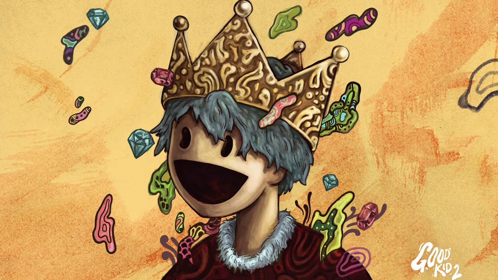

GoodKid2 è il secondo album rilasciato della band Good Kid, ma adesso ci chiederete "ma il primo dov'è?".
Beh, sappiate che non avevamo voglia di mettere una quinta immagine e poi impazzire per tenere in ordine il disastro -_-'.

L'album è noto per i brani come Everything Everything per parlare di ansia e del sentirsi sopraffatti, ma con energia e ritmo che solo Good Kid è in grado di fare.
| # | Titolo | Durata |
|---|---|---|
| 1 | Down With The King | 2:56 |
| 2 | Everything Everything | 2:46 |
| 3 | Slingshot | 2:32 |
| 4 | Pox | 2:38 |
| 5 | Aloe Lite | 2:29 |
| 6 | Drifting | 2:26 |
Formazione: Nick Frosst (voce), Jonathon Kereliuk (batteria), Michael Kozakov (basso), David Wood e Jacop Tsafatinos (chitarra).